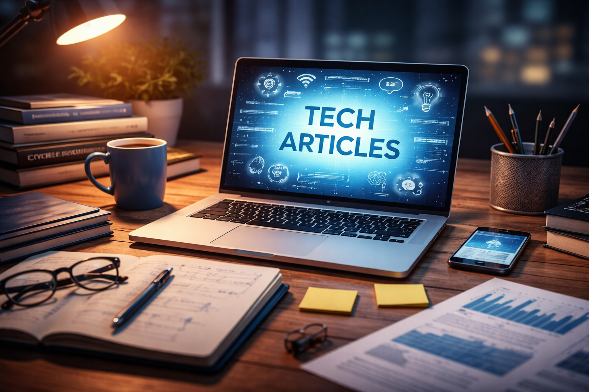

Guide idea
How to troubleshoot slow Wi-Fi before buying new hardware
A practical explanation of where to start, what to test, and how to avoid spending money before you know the real issue.
Articles and Q&A
This section is designed to become a growing library of practical writing. It supports the portfolio side of the site, but it also shows how I explain ideas, answer questions, and make technical topics easier to understand.

Featured topics
Guide idea
A practical explanation of where to start, what to test, and how to avoid spending money before you know the real issue.
Guide idea
Structure, content, professionalism, and how to make a website support your goals instead of just filling space.
Guide idea
The kind of article that helps people understand the important tradeoffs without feeling like they need to be experts first.
Why this section matters
A good portfolio should show more than outcomes. It should also show how the person thinks, explains, and teaches. Articles give me space to do that while making the site more useful for visitors at the same time.
What readers should expect
Q and A topics
That depends on what feels slow or limiting now. In most cases, the answer should connect directly to your actual use, budget, and future plans rather than a generic parts list.
This is exactly the kind of question that benefits from step-by-step testing. A good article or support conversation can separate signal issues from service issues before assumptions take over.
Clear navigation, stronger content hierarchy, focused pages, and writing that helps visitors understand who you are and why your work matters.